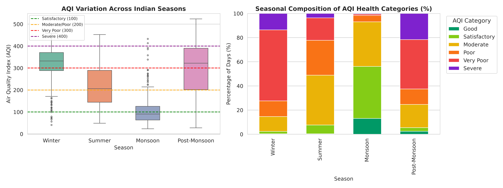

78°N · Polar Margin · Cryosphere
Arctic Sea Ice Fracture
Fracturing sea ice sheets and summer melt margin dynamics over polar waters.
Signal Earth explores environmental change through satellite observations, open datasets, scientific research, and reproducible analysis.

Continuous visual transect across planetary latitudes: from polar cryosphere fracture margins to regional aerosol stagnation and intra-urban thermal radiometry.
Fracturing sea ice sheets and summer melt margin dynamics over polar waters.
Post-harvest agricultural burning smoke spreading across the northern plains.

Dense winter aerosol entrapment beneath suppressed meteorological inversions.

High-resolution infrared zoning exposing urban heat microclimates and industrial hotspots.

Spaceborne night radiance capturing the spatial morphology of the National Capital Region.

The southern Himalayan mountain front physically trapping winter aerosols within the plains.

The thin protective gaseous envelope shielding the biosphere from outer space.
Hydrological pathways and riparian corridors governing regional transport and microclimates.
Quantitative investigations into atmospheric particulate dynamics, thermal infrared zoning, and statutory NAQI formulations.
Continuous regulatory PM2.5 evaluation across two monitoring windows, documenting seasonal ratios, extreme atmospheric stagnation events, and an explicit 855-day unmonitored station hiatus.
High-resolution thermal infrared radiometry from Landsat 8/9 resolving intra-urban microclimates and thermal variance across Kanpur masked by coarse global reanalysis.

Analysis of 24 pollutant components and statutory breakpoint mechanics demonstrating particulate dominance over headline AQI scores across the National Capital Region.
Signal Earth is an independent environmental research initiative exploring how our planet changes through satellite observations, open environmental datasets, and reproducible scientific analysis. We investigate atmospheric, hydrological, and land surface processes with zero sponsored bias.
Particulate pollution dynamics, continuous CAAQMS telemetry, meteorological boundary layer interactions, and seasonal aerosol multipliers.
High-resolution satellite radiometry, urban heat island zoning, impervious surface warming, and riparian cooling buffer dynamics.
Public sensor archives from NASA, ESA, USGS, and CPCB paired with documented, fully reproducible Python processing workflows.
Environmental change deserves more than headlines. Signal Earth operates on three core commitments to scientific integrity: